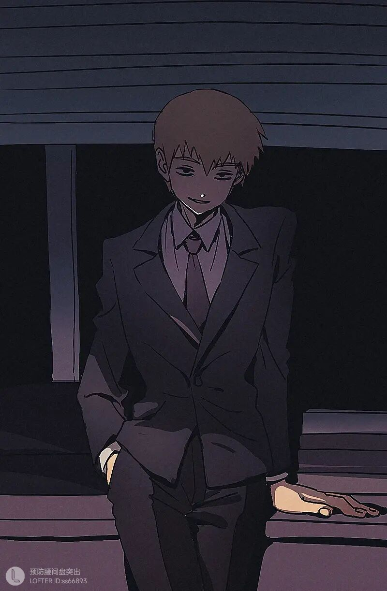

灵幻新隆，男，是日本动漫作品《灵能百分百》的第二主角，影山茂夫的师父。自称灵能力者，实则是个毫无超能力的普通人，经营着“灵类相谈所”。自小的梦想是成为大人物。
头脑灵活，洞察力极强，心思缜密，有着高竿的话术技巧和灵巧圆滑的处世之道，做任何事都能很快抓住要领。口若悬河，熟悉各种诈骗手段，习惯使唤人，典型神棍。实际上心智非常成熟，内心温柔，很有责任感，面对困境总是选择最为明智的做法。
对上真正的幽灵时所用的招式都和盐有关，但因使用的是超市买的食盐而不是净化过的盐，完全没有效果。 把拥有超能力的影山茂夫收作弟子，自己无法应付的（所有）恶灵基本都交给茂夫收拾。在可以看到小酒窝后总是吩咐他去帮忙吃掉恶灵，导致小酒窝一度很不满并且强化了"隐形模式"。 会给自己的招式起一些奇怪的名称。
身手敏捷，体术不错，自称少林寺拳法绿带，能一击放倒持刀威胁者。依靠观察力和心理诱导，猜拳有自信不输任何人。 一开始使用价格优势竞争业务，但生意冷清，自从建立网站以后委托日益增多。 猫舌，怕烫。非常害怕蟑螂。喜欢狗。 自称灵能力者 虽然做着灵媒师的工作，实则毫无超能力。精通除了超能力以外的几乎任何技巧，比如体术、按摩、修图等等。（但是数学好像不太好←漫画特别篇提到过） 将委托人的问题统统归咎于恶灵诅咒，依靠近乎诈骗的方式完成委托。但具有相当的职业操守，收费不高，并且从实际角度也确实的解决了客人的问题。
24岁时对原有工作感到厌倦而辞退了工作 ，一时兴起成立了事务所,但很快又失去了兴趣，在25岁准备再次跳槽时遇到了正为超能力苦恼的龙套, 虽然以为龙套是妄想症，但还是耐心地给了龙套非常中肯的建议。 在见识到龙套的超能力后意识到了超能力者的存在，以此为契机成为了龙套的师父，并开始了除灵业务。